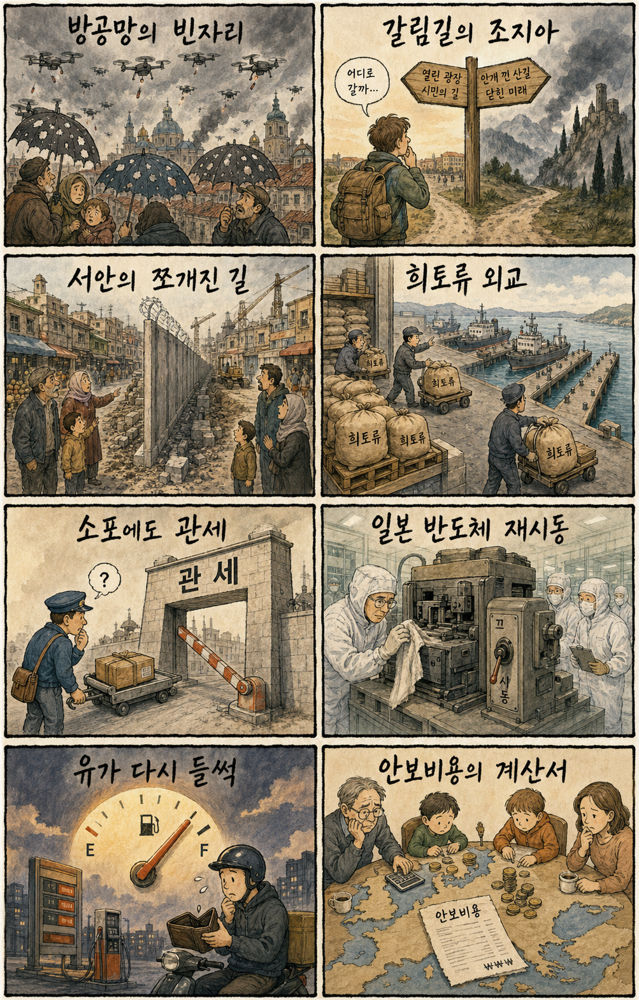
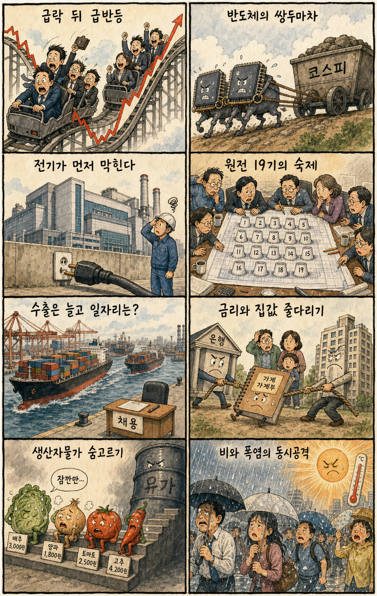

01
마벨 · 238.00→251.01달러 · +5.47%
내용요약 맞춤형 AI칩 기대가 이어지며 시가 대비 5.47% 올라 조사 대상 중 가장 강했습니다.
예상여파 국내 설계·패키징 연결주 심리에 긍정적일 수 있지만 전일 급반등 뒤 단순 추격은 피해야 합니다.
MORNING_BRIEFING_20260821
작성 시각: 2026-08-21 06:40 KST · 직전 미국 정규장과 2026-08-21 KST 당일 공개 기사 기준
8월 20일 미국 정규장은 국채금리 반등과 월마트 약세로 3대 지수가 동반 하락했습니다. 다우 -1.32%, S&P 500 -0.87%, 나스닥 -1.00%였습니다. 마벨은 시가 대비 +5.47%, 어플라이드 머티어리얼즈는 +1.35%로 반도체 일부가 버텼지만 대형 기술주와 소비주는 대체로 약했습니다. 전일 KOSPI가 반도체 중심으로 +5.89% 급반등한 직후라 오늘은 미국 약세와 유가 상승을 반영한 시초가 갭, 외국인 수급 지속성을 우선 확인해야 합니다.
| 지수 | 종가 | 등락률 | 한국 증시 영향 |
|---|---|---|---|
| 다우존스 | 52,759.21 | -1.32% | 소비·경기민감 심리 부담 |
| S&P 500 | 7,641.16 | -0.87% | 위험선호 둔화 |
| 나스닥 종합 | 26,067.17 | -1.00% | 대형 기술주 조정 |
국채금리 반등에 -0.87~-1.32% 내렸습니다.
시가 대비 +5.47%, 장비주는 일부 버텼습니다.
전일 반도체 중심 급반등으로 6,852.58에 마감했습니다.
급반등 뒤 갭 위험과 검증 표본 부족으로 관망합니다.
8월 20일 보고서는 전일 급락과 미국 반도체 약세 속에서 수급·컨센서스·30건 보정 표본·손익비 문턱을 동시에 검증하지 못해 공식 추천을 내지 않았습니다. 게시 당시 판단은 그대로 유지됩니다.
| 시장 | 종가 | 등락률 | 해석 |
|---|---|---|---|
| KOSPI | 6,852.58 | +5.89% | 20일 종가·시가 대비 +2.58% |
| KOSDAQ | 840.89 | +1.99% | 시가 대비 -0.37% |
| 다우존스 | 52,759.21 | -1.32% | 금리·소비 부담 |
| S&P 500 | 7,641.16 | -0.87% | 위험선호 둔화 |
| 나스닥 | 26,067.17 | -1.00% | 대형 기술주 조정 |
마벨 +5.47%, AMD +0.76%로 상대 강세였습니다.
어플라이드 머티어리얼즈는 시가 대비 +1.35%였습니다.
월마트는 시가 대비 -2.36%, 다우는 -1.32%였습니다.
크라우드스트라이크는 시가 대비 -3.52% 밀렸습니다.
내용요약 맞춤형 AI칩 기대가 이어지며 시가 대비 5.47% 올라 조사 대상 중 가장 강했습니다.
예상여파 국내 설계·패키징 연결주 심리에 긍정적일 수 있지만 전일 급반등 뒤 단순 추격은 피해야 합니다.
내용요약 반도체 장비주는 약세장에서도 시가 대비 1.35% 상승했습니다.
예상여파 국내 장비·소재주에 완충 요인이지만 실제 주문과 외국인 수급을 따로 확인해야 합니다.
내용요약 보안 소프트웨어 매도가 이어지며 시가 대비 3.52% 하락했습니다.
예상여파 고밸류 성장주의 변동성 확대가 국내 소프트웨어·AI 테마의 추격 부담을 높일 수 있습니다.
내용요약 실적 전망 실망 보도 속에서 시가 대비 2.36% 하락했고 다우 약세에 영향을 줬습니다.
예상여파 미국 소비 둔화 우려는 한국의 소비재 수출과 글로벌 경기민감주 심리에 부담입니다.
내용요약 대형 기술주 조정 속에 시가 대비 1.94% 밀렸습니다.
예상여파 나스닥 약세와 함께 국내 대형 성장주의 시초가 심리를 제약할 수 있습니다.
미국 3대 지수 하락과 WTI 2.33% 상승은 전일 5.89% 급반등한 KOSPI에 차익실현 압력을 줄 수 있습니다. 다만 마벨과 반도체 장비주의 상대 강세는 메모리·장비 심리를 일부 지지합니다. 오늘은 KOSPI 6,800선과 전일 종가 방어, 삼성전자·SK하이닉스의 시초가 갭 이후 거래대금, 외국인 현·선물 수급의 연속성을 함께 확인합니다. 급반등 다음 날의 장전 호재 연결은 매수 근거가 아니며 과도한 갭에서는 추격하지 않습니다.
오늘은 추천 없음 — 현금 관망
전일 KOSPI +5.89% 급반등 직후 미국 3대 지수가 하락한 가운데 전일까지의 외국인·기관 수급, 컨센서스 변화, 30건 이상 유사 조건 확률 보정, 예상 손익비 1.5 이상을 동시에 검증해 종합점수 75점·상승확률 60% 문턱을 넘긴 후보가 없습니다. 숫자를 임의로 채우지 않습니다.
관심 연결종목 메모리·반도체 장비, 데이터센터 전력, 항공물류는 관찰 대상일 뿐 매수 추천이 아닙니다. 전일 급등 종목과 과도한 시초가 갭에서는 추격매수 금지입니다.
급반등 뒤 전일 종가와 외국인 현·선물 수급을 봅니다.
전일 두 자릿수 급등 뒤 추격 수요의 지속성을 확인합니다.
항공·화학 원가와 정유 마진 반응을 구분합니다.
교통·침수·온열질환·전력 피크를 함께 대비합니다.
핵심 요약: AI·반도체 투자의 병목이 전력망으로 이동하는 가운데 마이크론은 미국 내 AI 메모리 연구개발을 확대하고 있습니다. HBM 집중으로 구형 D램 공급이 빠듯해지고, AI 반도체 수출은 항공화물 수요까지 끌어올리지만 유가와 인프라 비용을 함께 봐야 합니다.
내용요약 AI·반도체·첨단산업 메가프로젝트를 반영하면 대규모 추가 전력이 필요하다는 분석을 전한 기사입니다.
예상여파 데이터센터와 반도체 생산능력 확대의 병목이 칩·부지에서 전력망과 발전원으로 이동해 에너지 투자와 사회적 비용 논의가 커질 수 있습니다.
내용요약 xAI와 AI 코딩 스타트업 코그니션의 인수 협상이 결렬됐다는 미국 시장 보도입니다.
예상여파 AI 에이전트 시장의 높은 기업가치와 통합 난도가 드러나면서 스타트업 인수 기대와 독자 성장 전략이 재평가될 수 있습니다.
내용요약 마이크론이 미국 보이시에 100억달러 규모 AI 메모리 연구소를 세운다는 보도입니다.
예상여파 미국 내 메모리 연구개발 역량이 강화되면 HBM 경쟁이 생산능력뿐 아니라 인재·패키징·고객 공동개발 속도로 확장될 수 있습니다.
내용요약 HBM 증설에 생산 자원이 집중되면서 범용 구형 D램의 공급이 빠듯해지고 가격이 오르는 현상을 다룬 기사입니다.
예상여파 메모리 수익성에는 도움이 될 수 있지만 수요처의 원가 부담과 공급 전환 시 가격 반락 가능성을 함께 봐야 합니다.
내용요약 AI 반도체 수출 확대가 항공화물 수요 증가로 연결되고 있다는 보도입니다.
예상여파 고부가 수출과 물류업에는 기회지만 유가·운임 상승과 특정 품목 의존은 수익 변동성을 높일 수 있습니다.
핵심 요약: 우크라이나 방공망 부족과 서안 정착촌 확대가 안보 불안을 높이고 있습니다. 중국의 희토류 차등 수출과 일본의 반도체 재건은 경제안보 경쟁을 강화하며, WTI 급등은 수입물가와 금리 경로에 다시 부담을 줍니다.
내용요약 우크라이나의 방공 미사일 부족 속에 러시아의 집중 공습 대응이 어려워졌다는 국제 보도입니다.
예상여파 방공망 공백이 길어지면 민간·에너지 인프라 피해와 추가 군사지원 요구가 커져 유럽의 안보비용이 늘 수 있습니다.
내용요약 이스라엘이 요르단강 서안을 사실상 분할할 수 있는 정착촌 사업 입찰을 시작했다는 보도입니다.
예상여파 영토 연결성이 약화되면 두 국가 해법과 휴전 외교가 더 어려워지고 역내 긴장이 재차 높아질 수 있습니다.
내용요약 중국이 국가별로 핵심 광물 수출을 차등 운용하는 흐름을 분석한 기사입니다.
예상여파 희토류가 외교·통상 수단으로 굳어지면 반도체·전기차 공급망의 조달 다변화와 재고 비용이 커질 수 있습니다.
내용요약 일본이 경제안보 정책과 정부 지원을 바탕으로 반도체 산업 재건을 추진하는 상황을 다룬 기사입니다.
예상여파 동아시아의 팹·소재·장비 투자 경쟁이 심해져 한국 기업에는 협력 기회와 보조금·인재 경쟁이 동시에 커질 수 있습니다.
내용요약 WTI가 2.33% 상승했다는 당일 국제유가 속보입니다.
예상여파 에너지 가격 반등은 항공·운송·화학 원가와 국내 물가에 부담을 주고 금리 인하 기대를 제약할 수 있습니다.

핵심 요약: KOSPI는 반도체 중심으로 5.89% 급반등했고 KDI는 성장률 전망을 3.2%로 높였지만, 수출·생산 회복이 일자리로 충분히 이어지지 않는 문제가 남아 있습니다. AI 반도체가 항공화물을 견인하는 가운데 중부 비와 남부 소나기, 폭염은 교통·생활물가·전력 수요를 압박합니다.
내용요약 KDI가 올해 성장률 전망을 2.5%에서 3.2%로 높였고 상향분 상당 부분을 반도체 효과로 분석했다는 보도입니다.
예상여파 성장률 개선은 긍정적이지만 반도체 편중이 심할수록 업황 반전 때 경기 변동성이 커져 내수·산업 다변화가 필요합니다.
내용요약 수출과 생산 회복이 고용 증가로 충분히 이어지지 않는 구조를 지적한 기사입니다.
예상여파 고용 없는 성장이 이어지면 가계소득과 내수 회복이 지연돼 경기 체감과 거시지표의 간극이 커질 수 있습니다.
내용요약 AI 반도체 수출 확대가 항공화물 수요 증가로 연결되고 있다는 보도입니다.
예상여파 고부가 수출과 물류업에는 기회지만 유가·운임 상승과 특정 품목 의존은 수익 변동성을 높일 수 있습니다.
내용요약 전일 급락 뒤 KOSPI가 반도체 주도로 5.89% 반등한 시장 흐름을 정리한 기사입니다.
예상여파 대형 반도체 쏠림이 강해 지수 회복과 개별 종목 체감이 다를 수 있으므로 오늘은 갭 추격보다 거래대금과 외국인 수급 지속성을 봐야 합니다.
내용요약 중부지방 비와 남부 소나기, 낮 최고 35도의 무더위가 함께 예보됐다는 당일 기상 기사입니다.
예상여파 출근길 교통 지연과 국지성 침수, 온열질환과 전력 피크를 동시에 대비해야 합니다.
